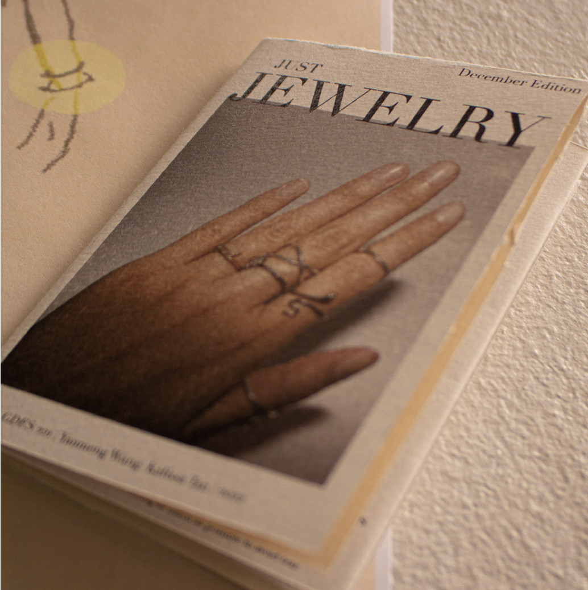
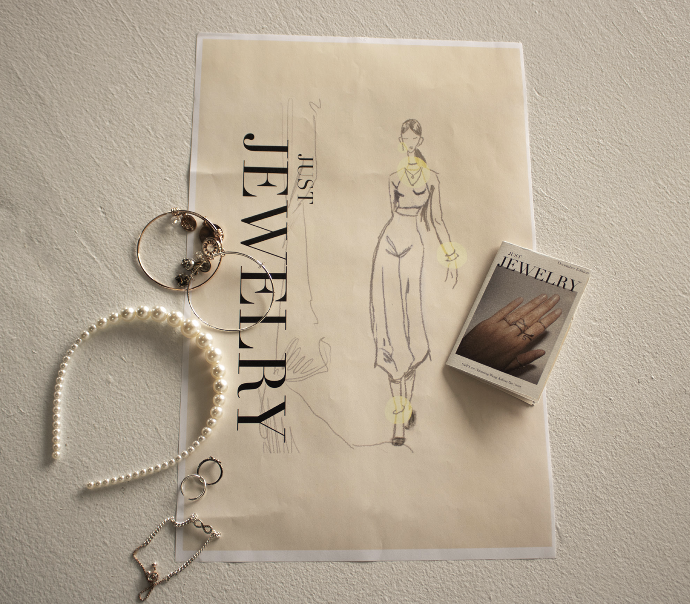
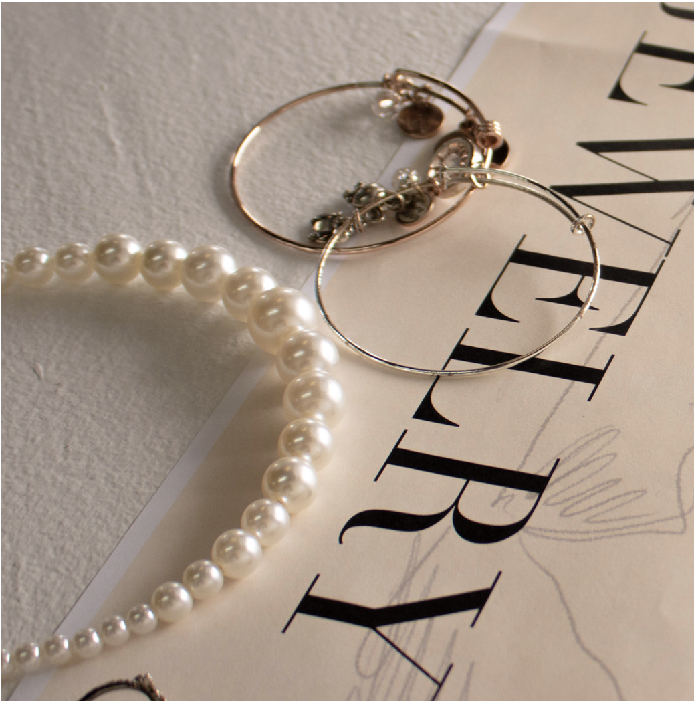
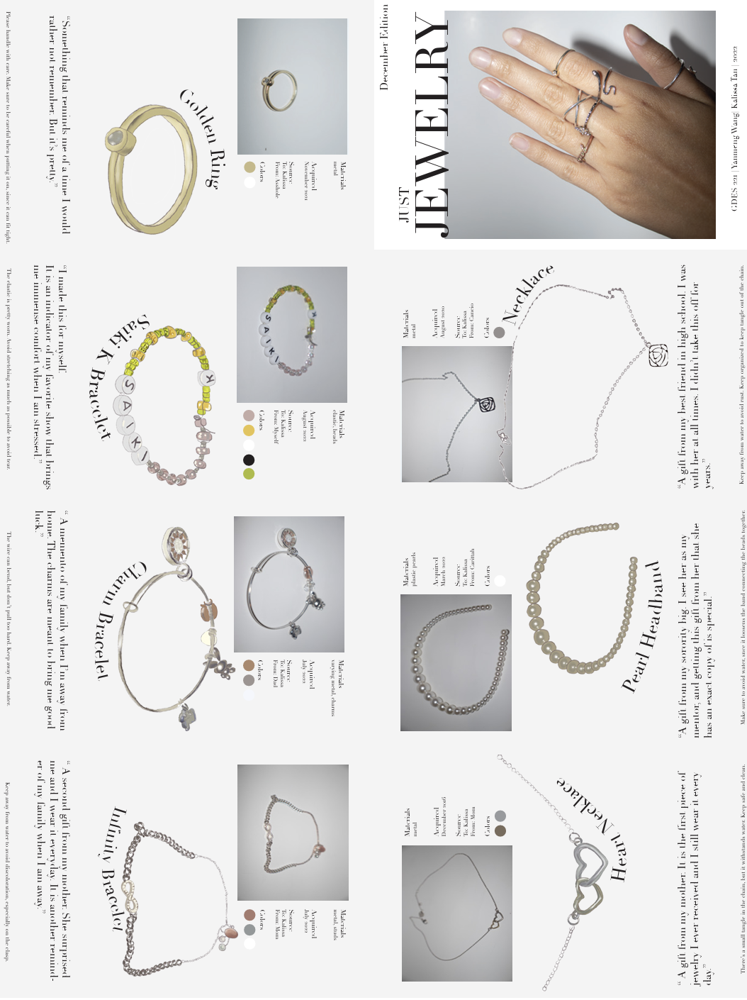
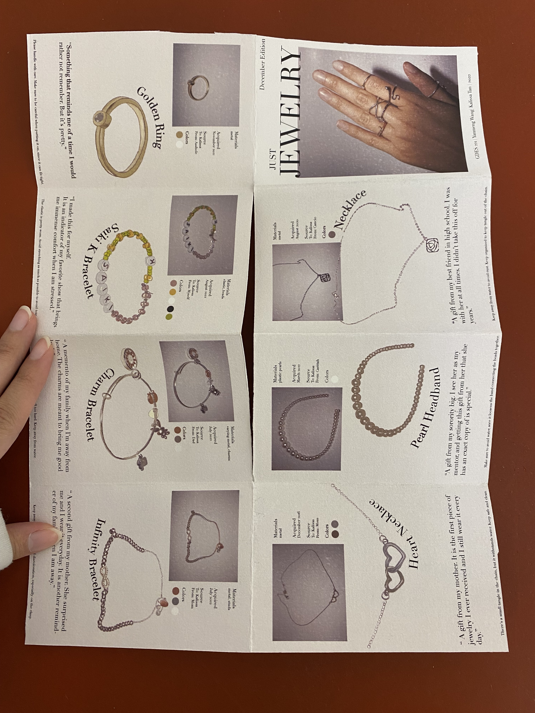

KALISSA TAN
Just Jewelry
A zine showcasing my most sentimental jewelry pieces
Wanting to mimic an editorial catalogue, I borrowed the standard layout of a magazine but added in my personal elements by describing the origin, care, and personal value of each jewelry piece I owned. The back unfolds to reveal a standard editorial catalogue poster.
This was my first time creating a zine, and it came with its challenges. Learning how to fold, cut, and use InDesign for the first time was a challenge, but I overcame and I often use this format for many other zines. Other challenges were editing photos, compiling layouts and drawings, and many other basics that I have now mastered.
This was my first time creating a zine, and it came with its challenges. Learning how to fold, cut, and use InDesign for the first time was a challenge, but I overcame and I often use this format for many other zines. Other challenges were editing photos, compiling layouts and drawings, and many other basics that I have now mastered.
Year: 2022
Skills: Adobe Photoshop, Procreate, Adobe InDesign,
Adobe Illustrator, Print Production
Skills: Adobe Photoshop, Procreate, Adobe InDesign,
Adobe Illustrator, Print Production
A close up on the zine.
The unfolded zine.
Detail shot.



Digital File
Physical Object

